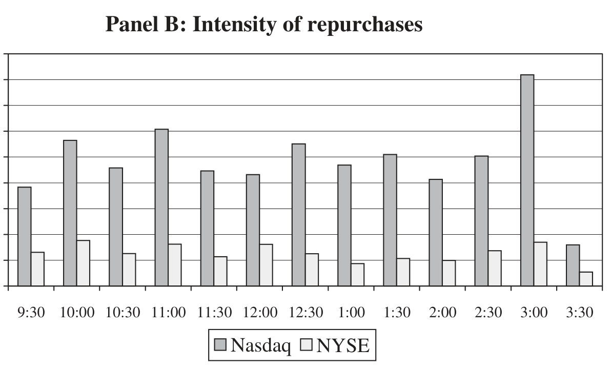
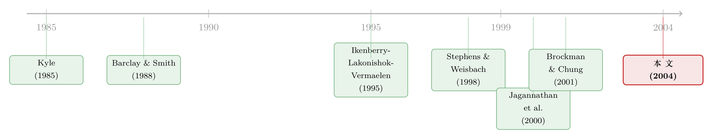

买回自己的股票，他们到底怎么「下手」？——一扇被披露制度关上的门
本文读的是 Cook, Krigman & Leach (2004, RFS)：他们靠 64 家公司「自愿」交出的回购成交记录，第一次把美国公开市场回购的「执行黑箱」撬开了一条缝——结果发现，回购不但没有损害流动性，反而在收窄价差、吸收抛压；而 NYSE 公司能买得比「机械买入」更便宜、NASDAQ 公司却买得更贵。一切的分水岭，是市场结构与披露制度。
1 一个被「公告」遮住的黑箱
关于股票回购，我们其实知道得不少：哪家公司宣布了回购、市场如何在公告日给它打分、回购公司的长期股价表现如何——这些问题被翻来覆去地研究过（关于「为什么宣布回购本身就值 3%」，可参见《宣布回购，却又不回购——一个不带任何承诺的好消息，凭什么值 3%？》）。从 1985 年 131 家公司回购 $15.8 billion，到 2001 年 1038 家公司宣布回购 $147.8 billion，回购早已是企业「把钱还给股东」的主流方式之一（这条「现金该不该还出去」的大命题，可参见《现金为什么一定要"还"出去？——四十年后，重读 Jensen 的自由现金流》）。
但你有没有想过一个更基础的问题：一家公司宣布要回购一亿美元的股票之后，它到底是怎么买的？是一口气买完，还是细水长流？是趁股价大跌时抄底，还是盯着信息发布的窗口择时下注？是用市价单横扫，还是挂限价单守在买盘？
这些问题，长期以来近乎无解。原因很简单也很关键：美国的回购公司没有任何义务披露它何时在交易。FASB 与 SEC 的披露标准，只要求公司在季度末报告流通股数的变化——你只能从 10-Q、10-K 里看到一个季度前后的「净变化」，至于这几十个交易日里公司哪天买、买了多少、以什么价格买，全是黑箱。即便有保护回购公司免受操纵指控的 SEC 安全港规则 10b-18，它也不强制披露（作者自己在 Cook, Krigman & Leach (2003) 里专门研究过这条规则的使用）。
于是，本文做了一件笨办法但很硬核的事：直接写信去要数据。
2 用一封问卷，换来 64 家公司的「交易流水」
作者向 SDC 数据库里 1993 年 3 月至 1994 年 3 月间宣布公开市场回购的 478 家公司逐一发问卷。68 家回了信，其中 4 家表示无法或不愿提供，最终 64 家构成样本（24 家 NYSE、41 家 NASDAQ——有一家中途从 NASDAQ 转板到 NYSE）。这些公司交出了交易日期、所用交易所、每日买入股数、成交价格等细节。作者再拿 NYSE 的 TAQ 数据库逐笔核对，剔除了结算日误报、含佣金的价格等问题。
最终的数据集：84.2 million 股、2190 个「公司–交易日」。为了进一步研究日内执行位置，作者用「组合规划」（combinatorial programming）从 TAQ 里反推出具体成交笔——在 3585 笔报告的回购里定位出 2655 笔，落在 1431 个公司–日上、超过 3100 万股。
这套数据的「原罪」是自选择。愿意把回购流水交出来的公司，多半既不是赚得盆满钵满（怕被指控操纵）、也不是亏得一塌糊涂（怕丢人）的极端户。作者老实承认：样本里的公司大概率「表现既不太好也不太坏」，所有结论都应「打个折」来读。他们用响应/未响应公司的市值、成交量、公告 CAR、三年超额收益做了对比（如表 2），中位数市值无显著差异、公告 CAR（2.94% vs 2.23%）与三年规模调整收益（39.57% vs 40.29%）都看不出区别——样本至少在这些维度上「像」总体。

Figure 3: presents NYSE and NASDAQ total daily volume for repur-
3 第一个发现：根本没有「标准动作」
把这 64 家公司的执行风格摊开看，第一印象就是乱——或者说，极度异质。
有人一天就把宣布的目标买完（一个很小的项目）；有人在公告后的 387 个连续交易日里，硬是买了 288 天。公司从宣布到第一次真正下手，平均要等 17 天，而有一家足足等了 124 天——四个多月才动第一笔。作者在第 2 节里挑了四家公司做「特写」（Firm 1 到 Firm 4），有的「快进快出」、买完一阵就沉寂几十天再来一波；有的像 Firm 3 那样，在 65 周里以每天 6000 股的「众数节奏」慢慢磨，325 个交易日里有 288 天在买，雷打不动，连信息发布都不影响它。
这种异质性本身就是一个结论：回购不是一个动作，而是一连串可以被不同动机塑造的决策。作者把短期动机归纳为四类——成本最小化、价格支撑、流动性提供、以及利用私有信息择时。问题在于，这四个动机彼此不互斥、经验上还很难分辨（比如「在买盘成交」既能解释价格支撑、也能解释流动性提供）。所以全文真正的主线，不是去裁定「公司到底图什么」，而是去看一个更深的结构性力量如何把这些行为分了岔。
4 真正的主线：市场结构,把一切劈成两半
这条主线就是交易所的微观结构。
NYSE 是专家(specialist)做市的市场，公众的限价单(limit order)可以和专家竞争、直接抬高买价、收窄价差——这是一个为「价格支撑」与「流动性提供」量身定做的舞台。而 1993–94 年的 NASDAQ 是纯交易商(dealer)市场：做市商没有义务展示它收到的限价单，公众无法直接和做市商竞争去压窄报价。同一个回购动机，在两个市场里能用的「工具」根本不同。
于是作者按交易所把样本一分为二，几乎每一个结果都沿着这条裂缝裂开：
执行位置。 在 NYSE，38.9% 的回购成交发生在当时的市场买价(prevailing bid)上——这正是挂限价单、等着被下跌行情「打中」的特征，与「在买盘吸收抛压、支撑股价」的故事高度一致。而在 NASDAQ，只有 8.1% 的成交是这样完成的。限价单在一个不展示限价单的市场里，自然没什么用武之地。
对价格的反应。 在 NYSE，每日回购量与当期及滞后的价格变化、成交量都显著相关——价格跌了、量上来了，公司就买，活脱脱一个逆向托盘者。而 NASDAQ 公司的回购量，与滞后超额收益、与当期价格变化都不相关。
summary 数据也对得上（表 1）。NYSE 公司显著更大（市值均值 $6.69 billion vs NASDAQ 的 $222 million），回购的天数更多、总股数更大；但两类公司的项目相对规模没差别——目标股数占流通股的比例分别是 7.40% 与 6.90%，p = 0.77，几乎一模一样。有意思的反差是：NASDAQ 公司在它真正下手的那天，会吃掉当日成交量更大的一块（33.03% vs NYSE 的 19.48%）。
5 反转:回购不但没添乱,反而在「供水」
讲到这里，一个聪明的读者会立刻警觉：如果公司是个「知情交易者」，又恰好在没人知道它在场的美国市场里偷偷买，那做市商不该被「逆向选择」吓得拉宽价差、收窄深度吗?
这正是本文最漂亮的反转，而它需要一个参照系才看得清。
参照系来自 Brockman & Chung (2001) 研究的香港。香港的披露制度与美国截然相反：回购公司必须在下一个交易日开盘前公开全部成交细节。在这个「人人都知道有知情管理者在场」的环境里，他们发现回购损害了流动性——价差更宽、深度更浅，正是市场对「知情交易」的防御性反应。
而美国呢？作者比较「有回购成交的日子」与「相邻的非回购日」，结论恰好相反：
- 回购日的报价价差，比紧邻的前一日和后一日都更窄；对 NASDAQ 股票，相比回购公告前的交易期，价差猛收
11美分/股以上。 - 用 Kyle (1985) 的视角看流动性——即「推动价格移动一单位所需的订单流」——作者发现回购日订单失衡(order imbalance)对价格的冲击更小。回购交易像一块海绵，把卖方的订单失衡吸收掉了（关于「用价格冲击度量流动性」这把尺子，可参见《想买走一家公司千分之一的股票，得把价格推高百分之一》）。
两个流动性维度——报价价差、与成交的价格冲击——都指向同一个结论：美国式回购是流动性的净贡献者。
为什么同样是回购，香港添乱、美国供水？答案就藏在那扇被关上的门里：正是因为美国不强制披露，市场无法确知「有个知情的回购者在场」，于是没有触发香港那种防御性的价差扩张；与此同时，公司的买盘（无论是显式限价单，还是「大家隐约知道有人在买」所带来的报价深度）又实实在在地补充了卖方流动性。披露制度，不是一个会计细节，而是直接写进了交易行为与市场影响里。
6 那它们买得划算吗:成本基准
最后一块拼图是成本。回购公司只能在公开市场买、不能再卖，所以它面对的不是传统的「市场择时」问题，而是一个最优累积(optimal accumulation)问题。怎么判断它买得好不好？
作者的做法很干净：构造若干「天真累积策略」(naive accumulation strategies)——比如按固定节奏、或按市场成交量比例机械地买入，使其达到与真实回购组合完全相同的终端持仓，再比较两者的总成本。
结果又一次沿着交易所裂开：NYSE 公司平均显著跑赢了这些基准（买得更便宜），而 NASDAQ 公司则跑输（买得更贵）。这与前面的故事完美自洽——能用限价单、在买盘逢低吸纳、对价格下跌做出反应的 NYSE 大公司，自然在成本上占了上风；而困在纯交易商市场、还得在自己下手那天吞掉当日三成成交量的 NASDAQ 小公司，往往为股票付了相对更高的价。
7 至于「内幕择时」?证据是反的
别忘了那个最具争议的动机——公司会不会利用私有信息，抢在好消息前买、坏消息前停？
Ikenberry, Lakonishok & Vermaelen (2000) 用加拿大公司的月度数据，发现回购活动与价格走势相关。本文把分辨率拉到日度，并直接看回购与公司自身信息发布的关系。结论是：公司确实在股价下跌之后买（逆向、托盘），但没有清晰证据显示它们能抢在股价上涨之前布局；更重要的是，在公司自身公告前后的五日窗口里，回购被显著收缩了。换句话说，这些公司是在主动回避踩在短期信息上交易。
作者也很坦白：这个「干净」的结果，恰恰可能是自选择的产物——会主动交出流水的公司，本就不太可能是那些靠内幕择时赚钱的公司（脚注里写得明明白白）。
8 文献脉络
把这条线索拉直来看，它是两股研究在 2004 年的交汇。
一股是回购研究：从 Barclay & Smith (1988) 把回购与现金股利放在「支付政策」的天平上称量开始，经 Ikenberry, Lakonishok & Vermaelen (1995) 的「公告后长期跑赢」、Stephens & Weisbach (1998) 对「实际回购股数」（而非公告意向）的测量、到 Jagannathan, Stephens & Weisbach (2000) 把回购与股利的选择归到「财务弹性」上——这一脉研究越来越逼近「公司到底做了什么」，但始终止步于月度或公告层面。
另一股是流动性与微观结构：Kyle (1985) 给了「流动性 = 推动价格一单位所需订单流」的语言；Singh, Zaman & Krishnamurti (1994)、Miller & McConnell (1995) 则盯着公告前后的价差变化，结论混杂。
本文站在两股的交点上：它把分辨率推进到逐笔成交，研究的是真正的交易日而非公告日；而它最直接的对手，是 Brockman & Chung (2001) 的香港研究——同样问「回购的时机与流动性影响」，却因披露制度相反而得到相反答案。本文的贡献，正是用美国的「非披露」环境，证明了制度本身才是分水岭。

9 评论与延伸（Q&A + 研究方向）
(a) 几个可能的疑问
Q：这只是 64 家自愿响应的公司，结论还能信吗？
这是本文最大的软肋，作者也最诚实。自选择会让样本剔除两端（赚翻的、亏惨的），从而衰减真实效应——所以「美国回购利好流动性」「NYSE 跑赢基准」这些结论，方向上大概率成立，量级则可能被低估。表 2 显示样本在中位市值、公告 CAR、三年收益上与总体无显著差异，算是给了一层安慰，但「无法用问卷以外的方式获取执行数据」这个硬约束，决定了它只能是「带保留的第一笔证据」。
Q：「回购利好流动性」和香港的「回购损害流动性」矛盾吗？
不矛盾，反而互为镜像。差别全在披露制度：香港要求次日公开成交细节，市场确知有知情管理者在场，于是防御性地拉宽价差；美国不披露，这种防御没被触发，公司的买盘净增了卖方流动性。这正是本文的核心论点——制度环境塑造行为与影响。
Q：NYSE 跑赢、NASDAQ 跑输，会不会只是「大公司 vs 小公司」？
规模和交易所在这个样本里高度缠绕（NYSE 公司市值均值是 NASDAQ 的近 30 倍），确实难以彻底拆开。但作者强调的机制是限价单的可用性：NYSE 有
38.9%的成交在买价上完成、NASDAQ 只有8.1%，且 NYSE 回购量对价格下跌有反应、NASDAQ 没有。机制证据指向市场结构，而非单纯规模——不过严格的因果分离，本文做不到。
Q：「在买价成交」到底是价格支撑，还是流动性提供？
作者明说这两者经验上分不开——挂买限价单既支撑了价格、也提供了流动性，是同一个动作的两面。所以本文不去裁定动机，而是退一步只问「净影响是什么」，答案是流动性净增加。这种「不强行识别动机、只测净效果」的克制，是它能站住脚的原因之一。
Q：公司在公告窗口前后减少回购，是「守规矩」还是「装样子」？
从数据看是真实的收缩（五日窗口内显著下降），与「主动避免在短期信息上交易」一致。但别忘了自选择：愿意交数据的公司，本就不太可能是靠内幕择时的那批。所以这更像是「我们能观察到的这群公司很规矩」，而非「所有回购公司都规矩」。
Q：这对今天还有意义吗？毕竟 NASDAQ 早就不是纯交易商市场了。
1993–94 年 NASDAQ 不展示限价单的制度，随后的订单处理规则改革已经改变。所以本文具体的「NASDAQ 跑输」未必能外推到今天。但它真正持久的洞见是方法论与制度论：执行黑箱可以被撬开，而披露制度会系统性地改写回购的市场影响——这一点在任何时代都成立。
(b) 几个可能的研究问题与提案
1. 把这套「执行黑箱」搬到公司债回购 / 债务回购上。
【经济故事】公司不只回购股票，也回购自己的债券（尤其在折价时）。债券市场是 OTC、交易商主导、且天然更不透明——这恰是检验「市场结构 × 披露 → 执行与流动性影响」的绝佳实验室。 【可行性】中。TRACE 提供了逐笔公司债成交与某种程度的透明度，但「哪笔是发行人自己的回购」难以识别，需要结合 SEC 文件或承销商记录。识别上可借助 TRACE 透明度分阶段引入做准自然实验。
2. 外资持有人结构如何影响回购的执行与流动性影响。
【经济故事】本文证明「市场是否知道有知情买家在场」是关键。那么持有人构成（尤其外资比例）会不会改变这种「知情判断」？外资多、信息劣势被假设更大的股票，回购时市场的防御性反应会不会更强？ 【可行性】中。需跨国回购数据 + 外资持股（如 FactSet/13F 在美、各国披露在外），识别可用「可投资度(investability)」放开作为外生冲击（参见本博客已讨论的相关自然实验思路）。挑战在于把回购执行的逐笔数据凑齐。
3. 用现代算法执行的视角，重估「最优累积」基准。
【经济故事】本文的「天真累积策略」放在今天已显粗糙——VWAP/TWAP、IS（implementation shortfall）算法早已是机构标配。一个自然问题是：公司回购的执行质量，相对于现代最优执行前沿，到底差多少？这把「成本最小化」动机量化到可比的尺度上。 【可行性】高（若拿得到执行数据）。方法成熟，难点仍是回购逐笔数据的可得性——可与代理回购的券商合作，或利用强制披露国家（如香港、英国）的数据。
4. 披露制度改革的事件研究：强制披露会不会「赶走」流动性收益？
【经济故事】本文的因果暗示是：不披露 → 流动性净增；披露 → 像香港那样受损。若某国从「不披露」转向「强制次日披露」（或反向），就能直接检验这条暗线。 【可行性】中高。需要找到一次干净的回购披露制度变更，配双重差分(difference-in-differences, DiD)。欧盟 MAR 等监管变迁是候选事件，识别的关键是找到不受影响的对照组。
10 我的判断
这篇文章的贡献，不在某个惊人的系数，而在它撬开了一个此前根本无法观察的黑箱，并第一次把「回购的市场影响取决于披露制度」这件事用美国–香港的镜像证据钉了下来。「美国回购净增流动性」「NYSE 凭限价单跑赢基准、NASDAQ 跑输」「公司主动回避在信息窗口交易」这三块，互相咬合成一个干净的故事，主线（市场结构 × 披露制度）贯穿始终，是教科书级的「让数据自己讲结构」的范例。
对识别，我最大的保留有两点。其一是无所不在的自选择——它几乎污染了每一个结论的量级（尽管多半只是衰减、不至于翻号）。其二是交易所与规模的缠绕：NYSE vs NASDAQ 的对比，到底有多少是「限价单可用性」、多少是「大公司 vs 小公司」，本文给了机制证据却无法彻底拆开。我会更想看到一个真正外生的市场结构冲击（比如 NASDAQ 后来的订单处理规则改革）来锚定因果。
后续我最想看到的，是把这套「逐笔执行 + 制度对比」的框架移植到公司债与外资持有人的语境里：债券市场更不透明、OTC 结构更复杂，正是检验「披露与市场结构如何共同塑造知情交易影响」的下一个、也更有现实意义的战场。
参考文献
- Barclay, M. J., and C. W. Smith, Jr. (1988). Corporate Payout Policy: Cash Dividends versus Open Market Repurchases. Journal of Financial Economics 22, 61–82.
- Brockman, P., and D. Y. Chung (2001). Managerial Timing and Corporate Liquidity: Evidence from Actual Share Repurchases. Journal of Financial Economics 61, 417–448.
- Cook, D. O., L. Krigman, and J. C. Leach (2003). An Analysis of SEC Guidelines for Executing Open Market Repurchases. Journal of Business 76, 289–315.
- Cook, D. O., L. Krigman, and J. C. Leach (2004). On the Timing and Execution of Open Market Repurchases. Review of Financial Studies 17(2), 463–498.
- Ikenberry, D., J. Lakonishok, and T. Vermaelen (1995). Market Underreaction to Open Market Share Repurchases. Journal of Financial Economics 39, 181–201.
- Ikenberry, D., J. Lakonishok, and T. Vermaelen (2000). Stock Repurchases in Canada: Performance and Strategic Trading. Journal of Finance 55, 2373–2397.
- Ikenberry, D., and T. Vermaelen (1996). The Option to Repurchase Stock. Financial Management 25, 1–24.
- Jagannathan, M., C. P. Stephens, and M. S. Weisbach (2000). Financial Flexibility and the Choice Between Dividends and Stock Repurchases. Journal of Financial Economics 57, 355–384.
- Kyle, A. S. (1985). Continuous Auctions and Insider Trading. Econometrica 53, 1315–1335.
- Miller, J. M., and J. J. McConnell (1995). Open-Market Share Repurchase Programs and Bid/Ask Spreads on the NYSE: Implications for Corporate Payout Policy. Journal of Financial and Quantitative Analysis September, 365–382.
- Singh, A. K., M. A. Zaman, and C. Krishnamurti (1994). Liquidity Changes Associated with Open Market Repurchases. Financial Management Spring, 47–55.
- Stephens, C. P., and M. S. Weisbach (1998). Actual Share Reacquisitions in Open-Market Repurchase Programs. Journal of Finance 53, 313–333.